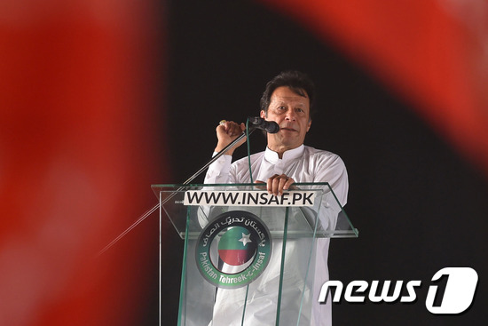

임란 칸 파키스탄 총리가 인도에게 핵전쟁을 각오하라고 경고했다. 칸 파키스탄 총리는 27일 전국에 방송된 TV연설을 통해 "양국간 오해는 핵전쟁으로 이어질 수 있다"고 경고하는 동시에 인도에 대화를 제안했다. 파키스탄과 인도는 최근 인도령 카슈미르에서 발생한 자살폭탄 테러 이후 갈등이 고조되고 있다.
지난 14일 인도령 카슈미르에서 발생한 자살폭탄 테러로 40여 명의 인도 군인들이 사망하자 인도는 배후로 파키스탄을 지목하고 26일 파키스탄령 카슈미르를 공습했다. 파키스탄은 이에 대한 보복으로 바로 다음날인 27일 인도 공군 전투기 2대를 격추하고, 1명의 조종사를 생포했다. 이후 몇 시간 만에 칸 총리는 TV연설을 통해 인도에 핵전쟁을 경고한 것이다.
카슈미르는 인도와 파키스탄의 경계에 있는 산악 지대로, 카슈미르 북부는 파키스탄이, 남부는 인도가 각각 통치하고 있다. 그러나 양국 모두 카슈미르 전체에 대한 영유권을 주장하고 있다. 카슈미르 접경지에서 인도와 파키스탄 간 포격전이 발생한 적은 있지만 전투기를 동원한 것은 1971년 이후 48년 만에 처음이다. 로이터통신은 핵 보유국끼리 이틀간 서로 공습을 주고받은 것은 역사상 처음이라고 보도했다.